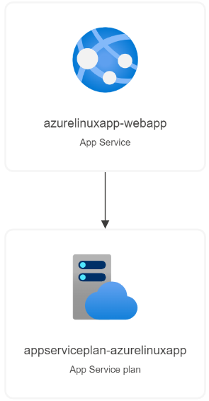

<h1 id="deploy-a-app-service-plan-and-a-basic-linux-web-app">Deploy a app service plan and a basic Linux web app</h1>
<p>
<p><br>    </p>
<p><br>    </p>
<p><br>    </p>
<p><a href="https://portal.azure.com/#create/Microsoft.Template/uri/https%3A%2F%2Fraw.githubusercontent.com%2FPrezSeah%2Fgalleryres%2Fmain%2Fresource-template-automation%2Fmicrosoft.web%2Fwebapp-basic-linux%2Fazuredeploy.json"></a>
<a href="http://armviz.io/#/?load=https%3A%2F%2Fraw.githubusercontent.com%2FPrezSeah%2Fgalleryres%2Fmain%2Fresource-template-automation%2Fmicrosoft.web%2Fwebapp-basic-linux%2Fazuredeploy.json"></a></p>
<p>This template allows you to deploy an app service plan and a basic Linux web app.</p>
